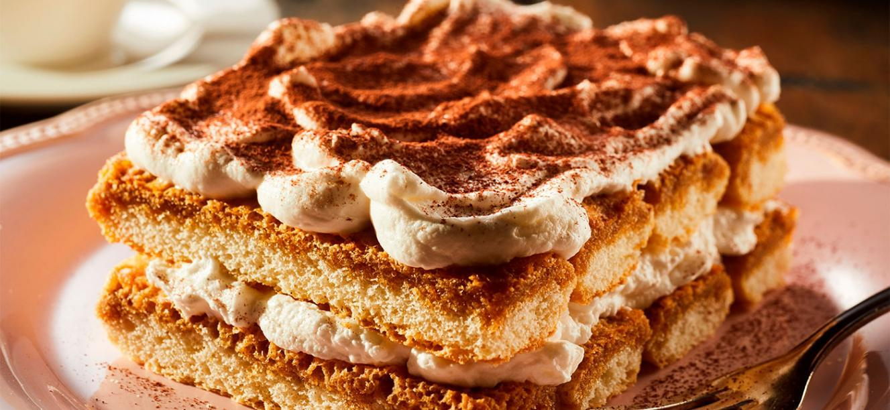

Tiramisú

Ingredientes
- Queso mascarpone
- Huevos
- Azúcar
- Bizcochos
- Café
- Cacao
Preparación
- Haz el café fuerte y déjalo enfriar, mezcla con el licor si lo vas a usar.
- Agrega claras montadas.
- Remoja bizcochos en café.
- Alterna capas de bizcochos y crema.
- Refrigera y espolvorea cacao.